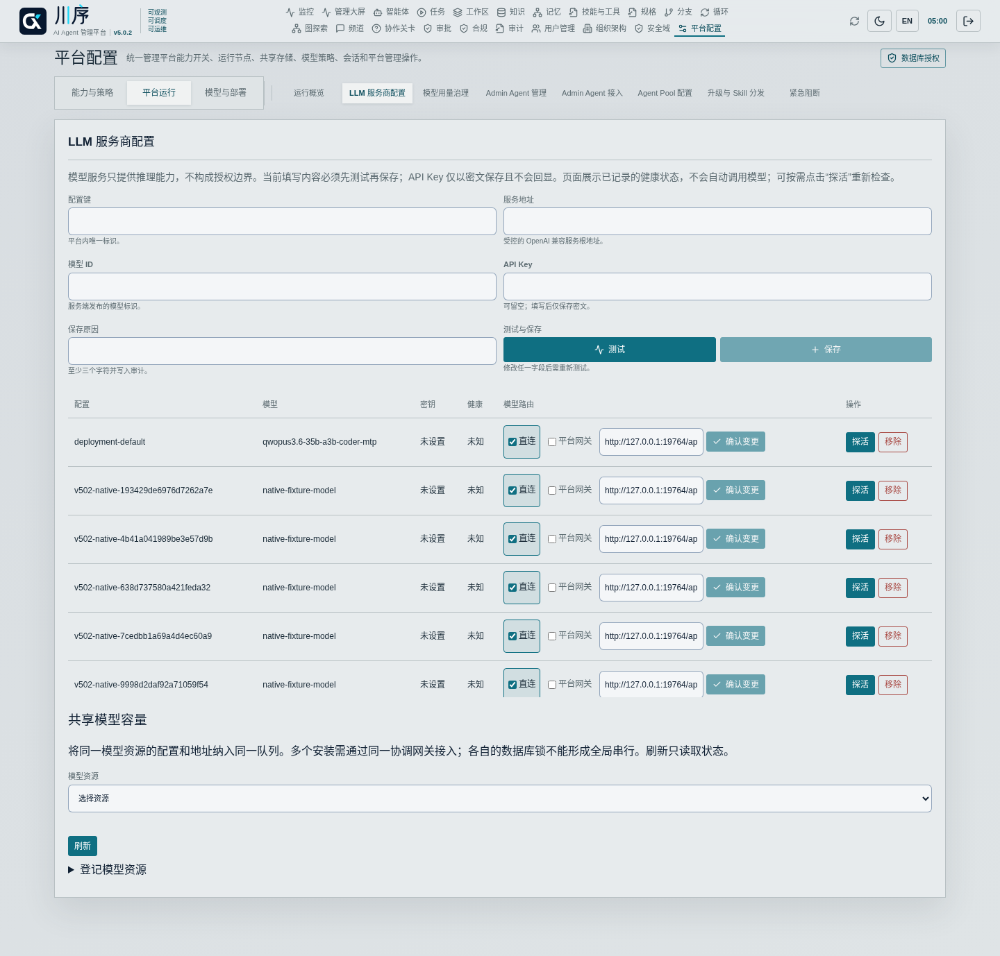
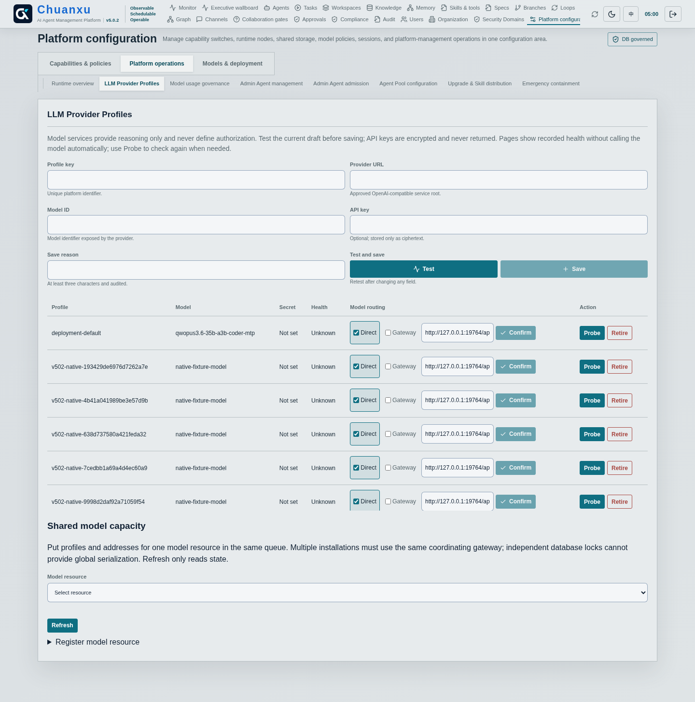
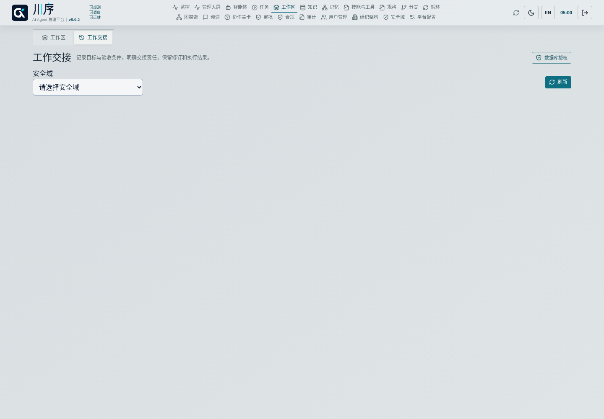
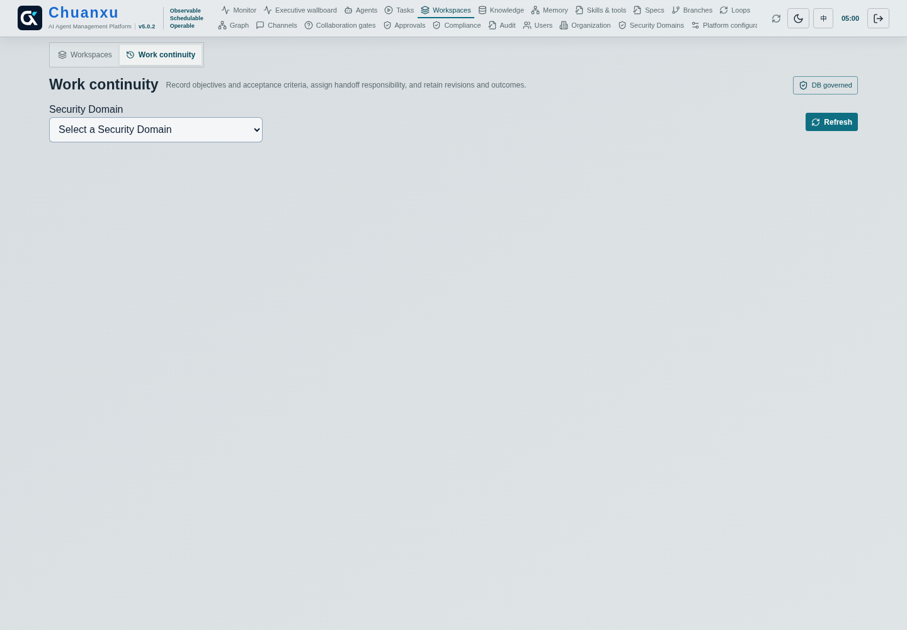

管理模型用量、容量与取消，保留运行观测并按规则诊断和恢复。Manage model usage, capacity and cancellation; retain observations and follow governed recovery paths.
v5.0.1 可选模型网关v5.0.1 Optional Model Gateway
在不强制改造全部 Agent 的前提下，建立 Token、配额与成本事实Build Token, Quota, and Cost Evidence Without Forcing Every Agent Through One Route
每个 LLM 服务商配置可以独立启用直连、平台网关或两者并行。管理员在同一行选择路由方式，确认变更并填写合规理由；转发地址由运行平台自动生成，不接受任意中转地址。网关执行硬配额或告警配额、原子预留与结算，并用 AES-GCM 保护有界幂等重放数据。经过可信路径的请求记录模型、Token 维度、来源、成本、延迟与状态，但不长期保存提示词和模型回答。Each LLM Provider Profile can independently allow direct access, the platform gateway, or both. An administrator selects routes on the same row, confirms the change, and records a compliance reason. The running platform generates the forwarding address and rejects arbitrary relay configuration. The gateway enforces hard or warning quotas, atomic reservation and settlement, and AES-GCM-protected bounded idempotent replay. Requests through trusted paths retain model, Token dimensions, provenance, cost, latency, and status without retaining prompts or model responses as long-term telemetry.
服务商账单导入进入追加式对账，企业平衡分摊把可核验费用分配到使用者、Agent 和组织；外部证据必须签名。绕过网关且没有可信适配器证据的调用明确标记为 UNOBSERVED，不制造“全量可见”的假象。Provider invoice imports enter append-only reconciliation, while enterprise-balanced allocation assigns verified cost to users, Agents, and organizations. External evidence must be signed. Calls outside the gateway remain UNOBSERVED without trusted adapter evidence; the product never implies complete visibility.
v5.0.2 · 2/8
共享模型容量与取消Shared model capacity and cancellation
端点别名共享明确的协调者与有界队列；取消区分排队、已发送和未确认状态，未知请求先协调再继续。Endpoint aliases share an explicit coordinator and bounded queue. Cancellation distinguishes queued, sent and unconfirmed work; unknown requests reconcile before continuing.


v5.0.2 · 3/8
可核对的模型观测Traceable model observations
记录排队、首字与总耗时，以及可获得的输入、输出、缓存和推理用量；缺失保持未知，不填成零，也不披露隐藏推理。Record queue, first-token and total timing with available input, output, cache and reasoning usage. Missing values stay unknown; hidden reasoning is never exposed.
v5.0.2 · 6/8
处理诊断与受控恢复Processing diagnosis and governed recovery
沿原 Task、尝试、Loop 与 Graph 诊断阻塞、无进展和重复工具调用，恢复保留原预算；已完成工作不重跑，未知副作用不盲目重发。Diagnose blocking, no progress and repeated tools along the original Task, attempt, Loop and Graph. Recovery preserves budgets, skips completed work and reconciles unknown effects before any resend.


企业管理者视图Executive Operating Picture
一个登录后只读大屏，同时看平台运行与模型消耗One Authenticated Read-only View for Platform Operations and Model Consumption
管理大屏汇总 Agent 总量、在线、忙碌与停滞状态，活动会话、运行任务计划与循环，并以近 14 日曲线展示 Token 和成本变化。页面同时给出受限模型用量、网关覆盖率、生成时间与新鲜度。大屏没有确认、审批、导出、配置、模型探活或 Agent 调用入口，适合企业管理者持续查看而不扩大操作权限。The wallboard combines total, online, busy, and stalled Agents with active Sessions, running Task Plans and Loops, then plots 14-day Token and cost curves. It also presents bounded model usage, gateway coverage, generation time, and freshness. There are no acknowledge, approve, export, configure, provider-test, or Agent-invocation actions, making it suitable for continuous executive viewing without expanding operational authority.